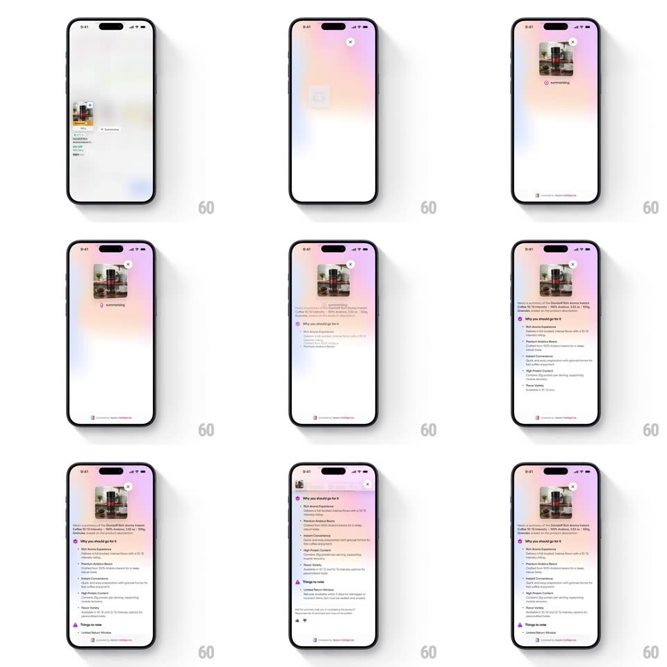

Media
Frame-by-frame

Rebuild this interaction 1:1: Swiggy Instamart's long-press summary - hold a product card and it morphs into a floating AI summary modal over a blurred pastel backdrop, with a "Summarising" state and staggered text reveals.

Rebuild this interaction 1:1: Swiggy Instamart's long-press summary - hold a product card and it morphs into a floating AI summary modal over a blurred pastel backdrop, with a "Summarising" state and staggered text reveals.
## Integration
Integration: stack-agnostic spec - springs given as stiffness/damping, timed motions as duration + curve; map every value to your framework and animation library of choice.
## Scene
A grocery list screen ("Gourmet At Its Finest") of product cards. On long-press, the pressed card lifts out and becomes a floating modal: the product image pinned at top with a close X, over a soft pastel gradient backdrop (pink to lilac to mint). The modal body fills with an AI summary: a title line, "Why you should go for it" bullet sections with icons, and "Things to note".
## Motion spec
Pattern: long-press card morph into an AI summary modal with staggered content reveal.
- Long-press (400ms hold): the card scales down slightly (0.96) under the finger, then lifts - scale to 1.0 while the list behind it blurs (blur 0 -> 20px, 300ms) and dims.
- The card morphs to the modal (matched-geometry transition: image, position, and corner radius interpolate, 350ms, ease-out) as the pastel gradient backdrop fades in beneath it.
- Loading state: a "Summarising" shimmer line pulses under the image (shimmer sweep 1.2s loop) while the backdrop gradient slowly shifts hue.
- When content arrives, the shimmer yields to the summary: the title types/fades in first, then sections stagger in 120ms apart, each rising 14px and fading (300ms); bullets inside a section cascade 60ms apart.
- A "Powered by" footer strip fades in last at the modal's bottom.
- Tap the X or the backdrop: the modal morphs back into the card in the list (reverse interpolation, 300ms) as the blur clears.
## Calibration
- The morph must be seamless - the product image is the shared element and never jumps or cross-fades.
- The backdrop gradient is pastel and soft - it reads as an AI moment, not a dimmed overlay.
## Reduced motion
Card fades into the modal (250ms) without the morph; content fades in without stagger.
## Don't miss
- The summary is structured (benefits vs things-to-note with distinct icons) - not a single paragraph dump.
- "Summarising" shows before content - never pop the modal open with empty space.